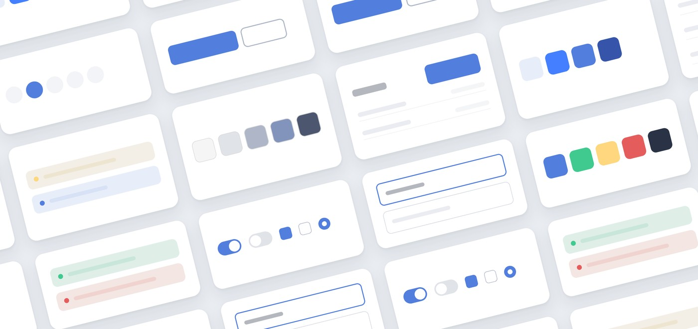
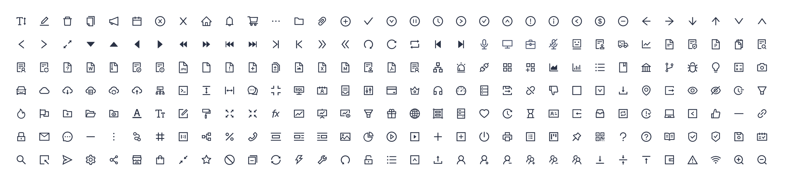
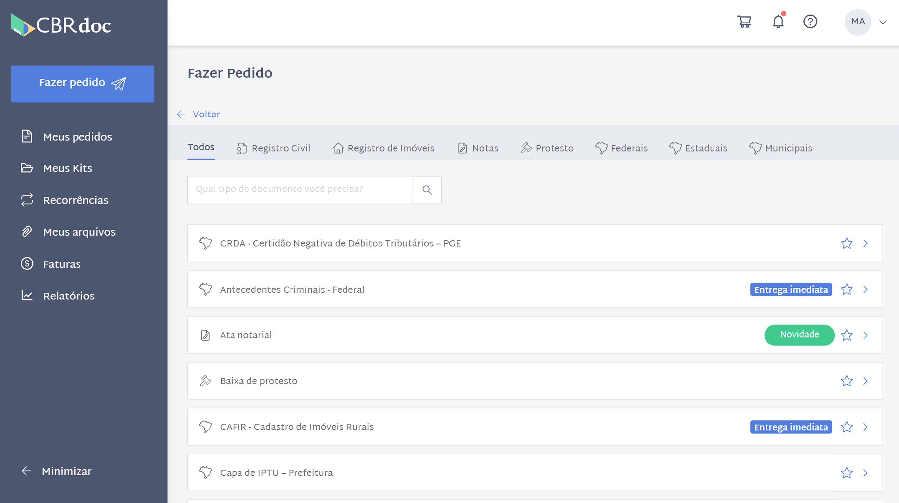
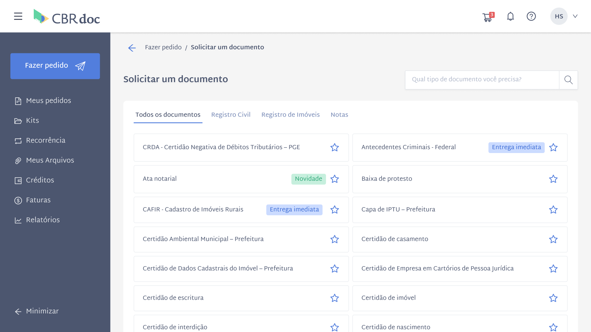
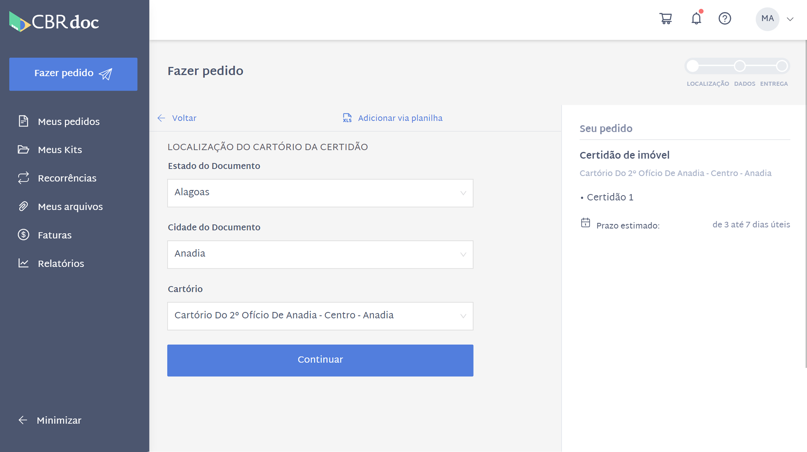
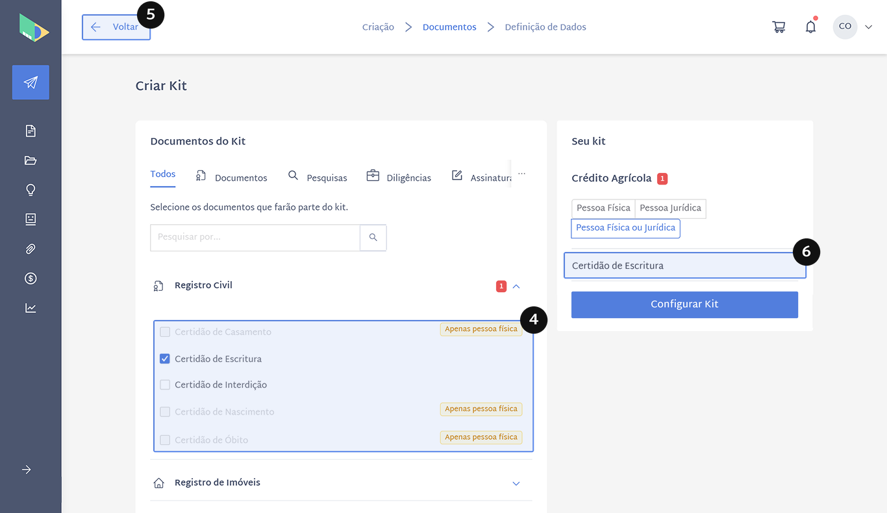
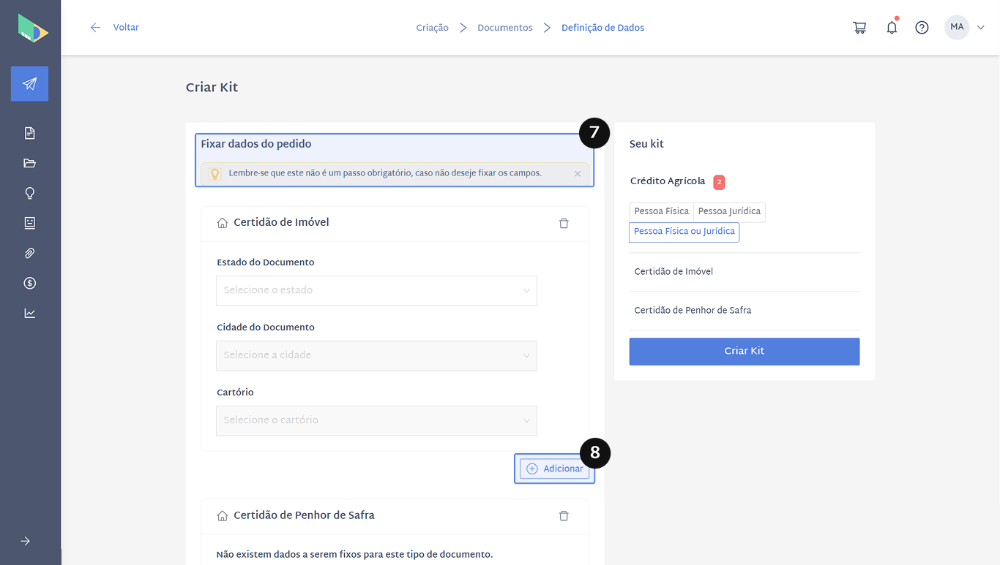

Design System e redesign de plataforma SaaS
Projeto
A CBRdoc é uma plataforma jurídica para solicitar certidões, pesquisas de processos e documentos.
Fui responsável pelo style guide, pelo Design System e pelo redesign da plataforma, feitos ao longo de meses junto com as entregas do produto. Com o DS estruturado, passei a usar IA no processo: o Claude gerava alternativas de tela e protótipos a partir do sistema, e eu comparava, refinava e especificava as soluções para o time.

Ver no Behance ↗
Apresentação visual do Design System: cores, tokens, tipografia, componentes e ícones.
Ponto de partida
Quando comecei a trabalhar com a CBRdoc, a plataforma estava em crescimento, com novas funcionalidades chegando. A interface precisava acompanhar o ritmo e ter uma base visual que permitisse evoluir o produto com consistência.
Como o produto não podia parar, o redesign precisava acontecer junto com as entregas. Para definir por onde começar, fiz uma análise geral de UI e UX: percorri os fluxos principais de ponta a ponta e anotei os problemas tela por tela.
Plano de mudanças
O redesign foi dividido em etapas que avançavam junto com as funcionalidades. Cada entrega nova já seguia o novo padrão, e as telas existentes eram migradas aos poucos.
-
Style guide
Base visual e componentes a partir do que já existia na plataforma.
-
Fluxos principais
Criação de pedido e kits.
-
Design System
Tokens primitivos e semânticos, documentados para design e desenvolvimento.
-
DS no Claude
Design System configurado no Claude para gerar componentes e telas.
Style guide
Comecei o style guide a partir do que já existia na plataforma, organizando primeiro a base: marca, tipografia, cores, espaçamentos, iconografia e os componentes mais usados. Depois, ele cresceu junto com o redesign: cada tela redesenhada acrescentava componentes e padrões. Com o tempo, o arquivo passou a cobrir quase toda a interface.
Cores
- Primária#527EDD
- Neutro escuro#2A3245
- Neutro claro#AEB6C8
- Sucesso#40CA8F
- Alerta#FED77F
- Erro#E55C5C
Tipografia
Aa
Martel Sans
Regular 400
SemiBold 600
Bold 700
- Título 1Meus pedidos24 / 120% · Bold
- Título 2Certidão de Imóvel22 / 130% · SemiBold
- Título 3Dados do pedido18 / 140% · Bold
- LabelEstado do documento14 / 140% · Bold
- CorpoSelecione os documentos que farão parte do kit.16 / 140% · Regular
- Corpo pequenoPedido realizado em 5 de julho12 / 130% · Regular
Botões
 Imagem: Botões
Imagem: BotõesControles
 Imagem: Controles
Imagem: ControlesCampos de texto
 Imagem: Campos de texto
Imagem: Campos de textoFeedback
 Imagem: Feedback
Imagem: FeedbackÍcones

Imagem: ÍconesRedesign dos fluxos principais
Com o style guide como base, redesenhei os fluxos com mais impacto no uso da plataforma: criação de pedido e kits. Cada redesign foi entregue junto com as funcionalidades do produto, e os componentes criados voltavam para o style guide, valendo para as telas seguintes.
A seguir, cada fluxo com a versão anterior, a nova e as principais decisões.
Criação de pedido
Criar um pedido é o fluxo principal da plataforma. Na versão anterior, a lista de documentos ocupava muito espaço na horizontal, e o formulário de dados ficava longo, com a ação principal no fim da página.
Escolha do documento

Imagem: Escolha do documento (antes)
Imagem: Escolha do documento (depois)- 1.Lista em grade de duas colunas, com a busca ao lado do título: o usuário vê mais opções de uma vez e encontra o documento com mais facilidade.
Localização do cartório

Imagem: Localização do cartório (antes) Imagem: Localização do cartório (depois)
Imagem: Localização do cartório (depois)- 2.Etapas e botão “Continuar” fixos no topo: o usuário sabe em que etapa está e avança sem precisar rolar até o fim do formulário.
Dados da certidão
 Imagem: Dados da certidão (antes)
Imagem: Dados da certidão (antes) Imagem: Dados da certidão (depois)
Imagem: Dados da certidão (depois)- 3.Tipo de certidão em um select com descrição em cada opção: as descrições continuam disponíveis, mas só aparecem quando o usuário abre a lista. O formulário fica bem mais curto.
- 4.Resumo do pedido com cada item e a opção de excluir: o usuário corrige o pedido sem voltar etapas.
Fluxo de kits
O kit existe para quem já sabe quais documentos precisa pedir com frequência. A plataforma deveria tornar essa seleção rápida, mas o fluxo fazia o contrário.
Os problemas se concentravam em três pontos: a listagem não ajudava a entender e escolher os kits, montar o kit exigia mais esforço do que deveria e a navegação levava a caminhos sem saída.

- 1.O link para a FAQ aparecia sozinho, sem um texto que explicasse para que serve o kit.
- 2.A coluna de documentos listava todos os itens de cada kit, e kits maiores geravam linhas enormes na tabela.
- 3.A data de criação ocupava uma coluna inteira sem ajudar a escolher qual kit usar.

- 4.A lista mostrava certidões que não se aplicavam ao tipo de pessoa, em vez de escondê-las.
- 5.O botão “Voltar” levava para a tela inicial da plataforma, em qualquer etapa.
- 6.Não dava para remover itens pelo resumo do kit.

- 7.A etapa “Fixar dados do pedido” não explicava o que significava. O único aviso dizia que ela não era obrigatória.
- 8.O botão “Adicionar” ficava solto entre os documentos e incluía um item por vez, então pedir 10 certidões significava clicar 10 vezes.

- 10.Documentos do mesmo tipo apareciam sem diferenciação.
- 11.O número ao lado de “Seu Kit” não tinha rótulo, então não ficava claro que indicava a quantidade de documentos.
- 12.No resumo, os documentos ficavam numa lista longa, sem separação clara e sem opção de excluir.
O objetivo do redesign passou a ser reduzir o esforço de seleção e preenchimento e organizar melhor os itens do kit.
Fluxo redesenhado
Design System
Conforme as entregas aconteciam, começaram a aparecer inconsistências visuais. A mesma cor chegava em produção com tons diferentes de uma tela para outra, porque o style guide mostrava como a interface devia parecer, mas não dizia como cada valor devia ser aplicado.
Eu queria uma fonte única de referência para design e desenvolvimento, em que cada decisão visual fosse tomada uma vez e valesse para a plataforma inteira. O plano era começar pelas cores, onde as inconsistências eram mais visíveis, e depois seguir para espaçamento e tipografia.
Desafio
O produto não podia parar. O Design System precisava ser construído em paralelo com as entregas, sem travar o time e sem exigir que tudo fosse refeito de uma vez. E precisava partir do que já existia no código.
Processo
O Design System foi organizado em três frentes: cores, tipografia e espaçamento. Em todas, o ponto de partida foi o que já existia na plataforma, e o objetivo era que Figma e código usassem as mesmas referências. Trabalhei junto com a dev de front-end, e as cores vieram primeiro, porque eram onde as inconsistências mais apareciam.
Cores
A dev de front-end fez o levantamento das cores usadas no CSS, que mostrou variações da mesma cor espalhadas pelo código. Usei esse levantamento como ponto de partida: agrupei as cores repetidas e quase iguais e defini o que cada uma deveria representar na interface.
A paleta partiu das cores da marca (azul, verde e amarelo) e ganhou o que a interface precisava além delas. Ficaram cinco famílias, cada uma com um papel:
- Azul: a cor principal da marca, usada em ações principais, links e foco.
- Verde e amarelo: também da marca, usados nos estados de sucesso e alerta.
- Vermelho: o estado de erro.
- Neutros: textos, fundos, bordas e superfícies. É a maior família, com 10 tons, porque sustenta a maior parte da interface.
Cores da marca
Azul
- 100#E8EEF9
- 400#437FFF
- 500#527EDD
- 700#3655AA
Verde
- 50#E0EEE8
- 300#62D4A3
- 500#40CA8F
- 700#2CA676
Amarelo
- 50#F3EFE7
- 500#FED77F
Cores de interface
Vermelho
- 50#F3E6E3
- 300#FF7D5F
- 400#FF6565
- 500#E55C5C
Neutros
- 0#FFFFFF
- 50#F5F5F5
- 100#F2F2F2
- 200#E8EBEF
- 300#E0E3E8
- 400#AEB6C8
- 500#8394BC
- 700#4C566F
- 800#2A3245
- 900#000000
Cada família ganhou uma escala numérica (como Neutral/0, Neutral/50 até Neutral/900), para que design e código falassem dos mesmos tons pelo mesmo nome. Também revisei o contraste das cores com base nas diretrizes de acessibilidade (WCAG) e propus ajustes em alguns tons. A empresa optou por manter as cores originais da marca.
Tokens
A partir daí, os tokens foram organizados em duas camadas:
- Primitivos: 24 cores, que são os valores brutos da paleta e não são usados direto nas telas.
- Semânticos: 36 tokens que dizem para que cada cor serve. Eles cobrem fundo, texto, borda e superfície, os estados da interface (primário, sucesso, alerta e erro) e as sobreposições.
Blue/500
#527EDD
Background/Brand
Botão primário
Text/Link
Links
Border/Focus
Campo em foco
Neutral/0
#FFFFFF
Background/Surface
Cards e painéis
Text/Inverse
Texto sobre botões
Neutral/400
#AEB6C8
Text/Disabled
Texto desabilitado
Border/Strong
Bordas de destaque
Tipografia e espaçamento
Depois das cores, a mesma lógica foi levada para a tipografia e os espaçamentos: os valores foram organizados no Figma e alterados no código, para que design e desenvolvimento usassem as mesmas referências.
Com isso, quem desenha ou implementa uma tela não escolhe mais “um azul”, e sim “a cor de texto principal” ou “o fundo de erro”. Se uma cor precisar mudar, a mudança acontece em um lugar só e vale para toda a plataforma. Os devs adotaram os tokens e o DS está em produção.
DS no Claude
A IA entrou depois que o DS existia, e foi o DS que a tornou útil. Construí com o Figma agent um arquivo do Design System no Claude, a partir do que estava no Figma. A partir daí, as telas geradas já saíam com os componentes e tokens do produto.
Esta seção está em construção. Em breve, exemplos de como usei IA para gerar variações de tela, criar protótipos navegáveis e escrever a documentação para o time.